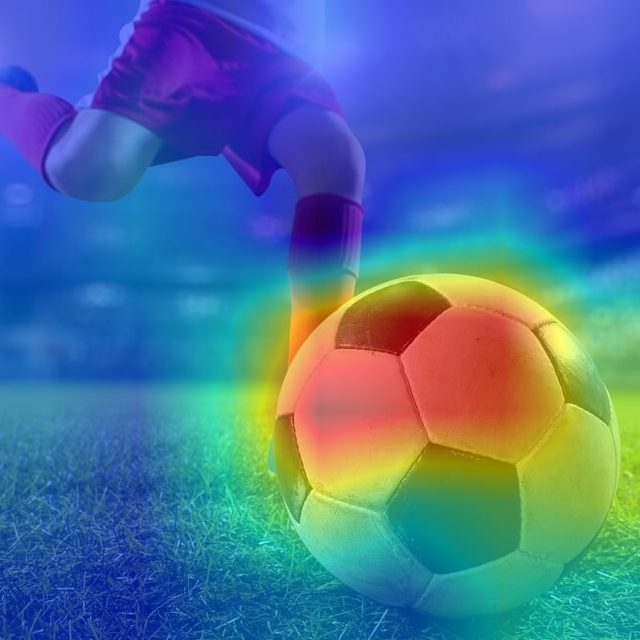

Image upload
Bring your own images and see how the classifier reads them.
Explainable AI · University of Florida
SaliencySlider is a Django web app that classifies your image with a pretrained VGG19 and lets you slide through the Grad-CAM evidence behind the prediction, revealing the most influential regions one step at a time.
Drag the divider to compare the original photo with its Grad-CAM saliency map, adjust the heatmap intensity, and switch between the blended overlay and the raw heatmap. Warm regions carried the most weight in the prediction.

Grad-CAM computed with a pretrained VGG19 on the repository's sample image; top prediction: soccer ball. The raw heatmap view is recovered from the 50/50 overlay blend. Keyboard: focus the divider and use the arrow keys.
The backend is a Django app that loads a pretrained VGG19 and runs your upload through it. Grad-CAM takes the gradients of the predicted class with respect to the final convolutional layer, weighs the feature maps by those gradients, and produces a coarse heatmap of the regions that pushed the prediction. The app blends that heatmap over the original image at the alpha you pick with the slider, so you can dial the explanation up or down in real time. It ships with a Dockerfile for one-command deployment and a Colab notebook for experimenting without any setup.
Bring your own images and see how the classifier reads them.
A slider controls how many influential regions are visible at once.
Compare gradient-based and gradient-free attributions on the same image.
Docker image for local deployment, Google Colab notebook for zero-setup experiments.
Built with Kian Ambrose, Lexie Certo, and Kristian O'Connor for MAS4115 Linear Algebra at the University of Florida.